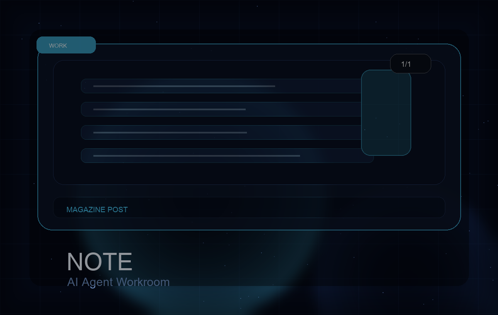

作業の目的
Obsidian内の下書きをnoteへ投入し、タグ、マガジン、公開設定を整える。

1/1note / Codex
Obsidianの下書きをnoteへ移し、タグ、マガジン、公開設定まで整えた発信運用事例。
Work detail
Obsidian内の下書きをnoteへ投入し、タグ、マガジン、公開設定を整える。
本文投入、無料記事設定、タグ追加、マガジン追加、公開後URL確認まで進められた。
note下書き、投稿先アカウント、タグ、マガジン、公開設定方針。
有料/無料、タイトルの温度、販売導線、公開前の違和感は人間が確認する。
noteを定期的に公開したい人、運用ログを発信資産にしたい人。
noteのUI変更やログイン状態によって、Chrome操作の確認が必要になる。
Related works